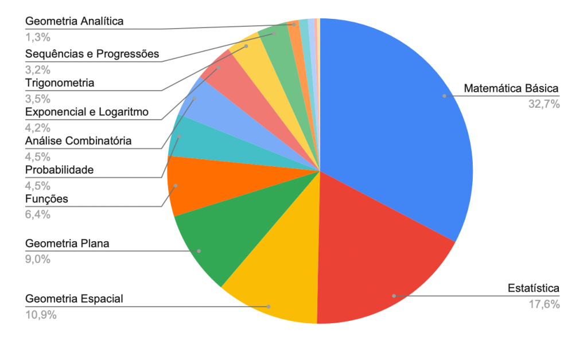

O que mais cai na prova de Matemática do Enem?
Quem está se preparando para o Enem sabe que a rotina de estudos pode ser exaustiva – e um tanto confusa. Há tanto material para ser estudado que muitas vezes os alunos ficam perdido no meio de listas de conteúdo e capítulos de livros
Autor: Vinicius Valverde
Afinal, oque priorizar?
Segundo uma análise das últimas edições do exame, os tópicos mais cobrados em
Matemática são:
Matemática Básica (32,7%) A maior parte da prova é composta por questões que envolvem operações fundamentais, razão e proporção, regras de três, porcentagem e interpretação de gráficos e tabelas. Esses conteúdos servem de base para várias outras áreas e são indispensáveis para resolver problemas contextualizados.
Estatística (17,6%) Com o crescente uso de dados no cotidiano, o Enem tem dado destaque à estatística. Questões sobre médias (aritmética, ponderada, harmônica), mediana, moda e análise de gráficos são frequentes, além de problemas que pedem interpretação crítica dos dados apresentados.
Geometria Espacial (10,9%) As questões sobre formas tridimensionais, como prismas, cilindros, cones e esferas, geralmente pedem cálculos de volume, área de superfície ou relações métricas. Essas questões muitas vezes são ilustradas, o que exige atenção ao desenho e às medidas.
Geometria Plana (9,0%) Assuntos como propriedades de triângulos, quadriláteros, polígonos e circunferências aparecem com frequência. Também são abordados conceitos de área e perímetro de figuras planas.
Funções (6,4%) Os candidatos encontram questões envolvendo gráficos, tabelas e a representação algébrica de funções, como a linear, quadrática e afim. Além disso, o entendimento do comportamento de uma função é essencial para resolver problemas do cotidiano.
Probabilidade e Análise Combinatória (4,5% cada) Esses conteúdos costumam ser aplicados em problemas práticos, como cálculo de chances em jogos, loterias ou distribuição de elementos em grupos. Embora não sejam tão frequentes quanto outros tópicos, podem ser diferenciais para quem está bem preparado.
Exponencial e Logaritmo (4,2%) Questões envolvendo crescimento exponencial, como juros compostos, ou o uso de logaritmos, aparecem em menor frequência, mas exigem uma boa base matemática.
Trigonometria (3,5%) Aparecem de forma contextualizada, como em problemas que utilizam relações trigonométricas para calcular medidas em triângulos ou ângulos em situações práticas.
Sequências e Progressões (3,2%) Progressões aritméticas (PA) e geométricas (PG) são os principais tópicos. Problemas com termos de uma sequência ou soma de elementos aparecem com frequência.
Geometria Analítica (1,3%) Embora menos recorrente, questões sobre retas, distâncias entre pontos e equações da circunferência exigem atenção dos candidatos
Como priorizar os estudos?
Com essa lista, fica claro que é fundamental priorizar Matemática Básica e Estatística, já que juntas representam quase metade da prova. Além disso, dedicar atenção à Geometria Espacial e Plana pode ajudar a resolver uma grande quantidade de questões. Para os demais tópicos, vale revisar conceitos essenciais e treinar com questões de anos anteriores. Outro ponto importante é praticar a resolução de questões contextualizadas e saber interpretar os problemas, já que o Enem valoriza o uso da Matemática para solucionar problemas do dia a dia. Dessa forma, o candidato desenvolve habilidades tanto para o exame quanto para desafios futuros.